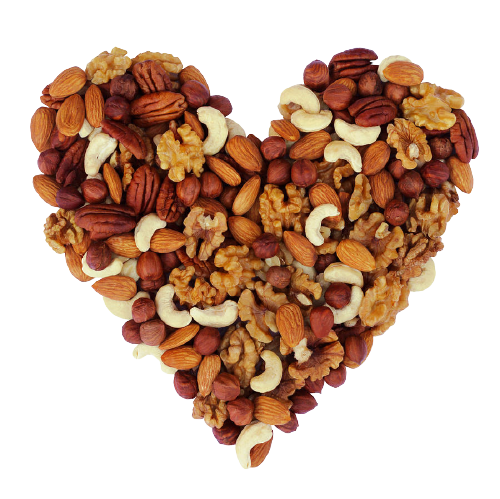

История подсолнечника уходит своими корнями в третье тысячелетие до нашей эры. Исследования показывают, что уже в то время, еще до "одомашнивания" злаков,
цветок культивировался североамериканскими индейцами. Семечки его ели, использовали в качестве лекарства, вырабатывали красители. Инки поклонялись подсолнечнику,
как священному цветку.
В Европу "Солнечный цветок" попал в 1510 году,
его "дикарем" привезли испанцы из Северной Америки. Поначалу подсолнечником украшали клумбы и палисадники. Позднее из диких видов селекционеры получили крупноплодный сорт.
-
Вас интересовало, что такое жирность продукта? Почему в масле 900ккал на 100гр? Зачем вообще нужен жир?
- Жиры очень сильно влияют на эндокринную систему
- Без жиров у человека могут выпадать волосы и ногти
- Метаболизм человека напрямую связан с жирностью продуктов
- Разные жиры обладают разлчиными положительными свойствами
- Одно из самых питательных веществ
 Если коротко - без жиров организм человека попросту перестанет нормально функционировать, а все потому, что:
Если коротко - без жиров организм человека попросту перестанет нормально функционировать, а все потому, что:<---- кратко о его истории(преимущественно подсолнечного масла)
- Очень калорийно
- Одна из главных причин ожирения
- Может повысить холестирин в крови
- Тяжело переваривается в желудке
- На коже может стать причиной забивания пор(косметика)
- Легко подделать дорогие виды масел
 Рассмотрим минусы жиров и масла в целом:
Рассмотрим минусы жиров и масла в целом: Вместе с этим есть и плюсы употребляения и применения жиров ----->
- Повышают эластичность кожи
- Способствуют нормальной работе щитовидной железы
- Содержат много витаминов
- Являются средой для растворения других витаминов
- Надолго насыщают
- Нужно совсем немного, чтобы получить пользу
- Одни из основных компонентов в косметике(правильные масла)


- Нерафинированное подсолнечное масло:
- Одно из самых дешёвых полезных масел
- Универсальное
- Содержит в себе много витаминов группы B
- Можно сделать дома
- Обладает приятным ароматом


- Сливочное масло(82.5%):
- Содержит витамины, необходимые для костей
- Можно хранить в морозильной камере
- Придаёт блюдам тонкий аромат
- Также можно приготовить дома
- Немного меньше по калорийности, чем растительные масла


- Горчичное масло:
- Самая низкая цена в южном федеральном округе
- Обладает обеззараживающим действием
- По пользе не уступает ореховым маслам
- Тяжело подделать
- Храниться очень долго


- Кокосовое масло:
- В основном используется в косметике
- Имеет самую лучшую растекаемость
- Может храниться годами(в холодильнике)
- Высокий температурный порог горения
- Очень экономично расходуется


Неправильное употребление жиров существует с давних пор, а все почему: жиры - самая длинная молекула, она захватывает большую долю рецепторов, усиливая вкусовые ощущения.
Думаете, почему продукты, как: печенье, эклеры, торты и т.д,такие вкусные? Верно - пара сахар+жиры создаёт убийственное во всех смыслах сочетания, приводящее к большим проблемам, например, ожирение и самое неочевидное:
при взаимодействии друг с другом белков и жиров, нуклеиновых кислот и глюкозы из съеденной жирной пищи, в тканях накапливаются токсические вещества,
и нарушают функции тканей.
Люди, употребляющие жирную пищу, часто ощущают изжогу, тошноту и даже рвоту, расстройство желудка. У них появляются заболевания пищеварительных органов, ожирение.
Что же тогда "правильно употребление"? Всё очень просто, разные виды масел обладают разными свойствами. Где-то характеристики лучше, где-то хуже, но всё сводится к одному - мера и качественный выбор. Именно эти два пункта помогут избежать интоксикации организма.
Например, почему здесь не было оливкового масла? Потому что после открытия бутылки оно очень быстро окисляется, становясь непригодным для употребления. То же самое происходит с льняным и хлопковым - именно окисление "убивает" витамины, делая масло просто калориями,
которые при этом ещё и невкусные, ведь из-за окисления появляется горечь.
Выбирать нужно преимущественно проверенные масла. Почитайте перед покупкой масла отзывы о нём на различных сайтах. Обходите стороной ресурсы, пропагандирующие кето-диету! Любая диета есть нечто
смонительное, а кето вообще испортит вашу поджелудочную и печень. Берите почаще нерафинированные масла - это одни из самых полезных!

Делаем вывод
Помните, что важна также и мера потребления, ведь ничего не будет полезно, если это в избытке. Сейчас стало всё доступно, теперь не приходится самому идти в поле, набирать семена, перемалывать их и делать масло, его спокойно можно купить в магазинах.
Совсем не плохо, что всё стало доступно, наоборот, у человека есть выбор, который желательно должен быть правильным.
Не экономьте на здоровье и знайте меру. Удачи!!!
Не экономьте на здоровье и знайте меру. Удачи!!!
